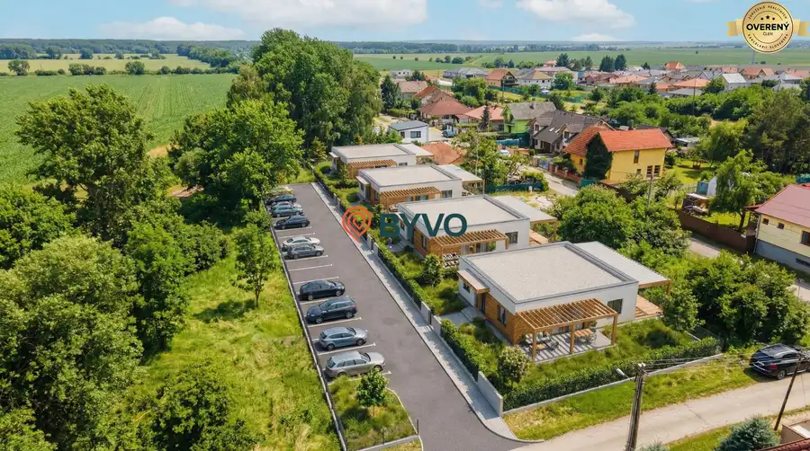
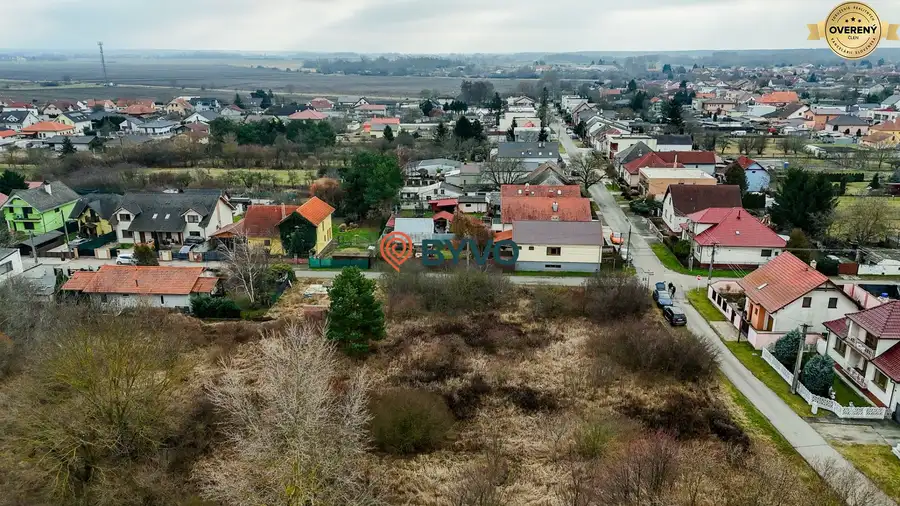
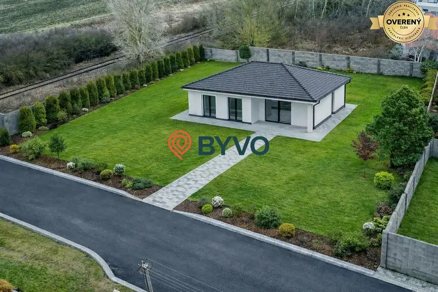

Na predaj dom ktorý môže slúžiť na podnikanie alebo bývanie vo Vrakuni
Vrakuňa, Bratislava-Vrakuňa
- Dispozícia7-izbový
- Plocha350 m²
- Poschodie0. z 2
O nehnuteľnosti
Na predaj výhradne u Nás v realitnej kancelárii Byvo-rodinný dom momentálne rekolaudovaný na zdravotnícke zariadenie.Tento dom by mohol slúžiť ako bývanie spojené s podnikaním alebo ako klasicky rodinný dom.Dom sa nachádza v mestskej časti Bratislava II.-Vrakuňa na Podpriehradná ulici v bezprostrednej blízkosti zastávok MHD.Dom do roku 2023 slúžil ako zdravotnícke zariadenie a momentálne je nevyužívaný.Dom sa nachádza na pozemku o výmere 664m2,jeho zastavana plocha je 208m2,celková plocha 416m2,úžitková plocha 350m2.Dom prešiel rekonštrukciou pred uvedením na zdravotnícke zariadenie,strecha,izolácie,kanalizácia,voda,elektrika,okna,fasáda,klimatizácie.V dome sa nachádza 10 miestností ktoré slúžili ako ambulancie a čakárne.Na pozemku je možnosť parkovania 6 aút a pred pozemkom na vlastnom pozemku ďalšie 2 autá .Jednoduchou žiadosťou je možné prekvalifikovať dom na rodinný dom alebo ako polyfunkciu.V danej lokalite je možnosť ešte dom nadstavbe a získať ešte jedno plnohodnotne podlažie.K domu prislúcha aj záhrada s exteriérovým krbom na grilovanie.Nehnutelnost sa nachádza v zastavanej časti a je klasifikované ako stabilizované územie.K cene treba pripočítať províziu RK 3%-
Ak Vás ponuka zaujala neváhajte ma kontaktovať na alebo telefonicky na
Parametre
| Rozloha pozemku | 664 m² |
|---|---|
| Zastavaná plocha | 208 m² |
| Celková rozloha | 416 m² |
| Úžitková plocha | 350 m² |
| Poschodie | prízemie |
| Počet poschodí | 2 |
| Počet izieb | 7 |
| Odvoz odpadu | áno |
| Voda | verejný vodovod |
| El. napätie | 230/400V |
| Plyn | áno |
| Kanalizácia | áno |
| Internet | TV káblový rozvod |
| Kúpeľňa | áno |
| Vykurovanie | vlastné - elektrické |
| Terasa | áno |
| Pivnica | nie |
| Garáž | nie |
| Parkovanie | vlastné vyhradené |
| Inžinierske siete | áno |
| Postavené z | tehla |
| Zariadenie | čiastočne |
| Zateplený objekt | áno |
| Strecha | po rekonštrukcii |
| Krb | nie |
| Klimatizácia | áno |
| Káblová televízia | áno |
| Energetický certifikát | nie |
| Predzáhradka | áno |
| Bezbariérový prístup | áno |
| Okná | plastové |
| Terén | rovina |
| Prístupová cesta | asfaltová cesta |
| Dátum zverejnenia | 8. 4. 2026 |
Kde to je
Mohlo by Vás zaujímať

Pozemok10 265 000 €Predáme pozemok s Územným rozhodnutím na výstavbu 4 domov.Odpočet DPH Vysoká pri Morave 150 m² Realitná kancelária Byvo Vám ponúka exkluzívne pozemok na výstavbu 4 rodinných domov v Obci Vysoká pri Morave v intraviláne obce už s vydaným Ůzemným…
Pozemok10 89 990 €Pozemok na výstavbu rodinného domu vo Vysokej pri Morave Vysoká pri Morave 548 m² Na predaj pozemky v obci Vysoká pri Morave o veľkosti cca 548m2 s možnosťou napojenia na IS v dosahu 10m od hranice pozemku.Pozemky sa nachádzajú na…
Rodinné domy7 279 990 €Predaj novostavby rodinného domu typ bungalov vo Vysokej pri Morave Vysoká pri Morave 4-izbový117 m² Realitná kancelária Byvo ponúka na predaj: Novostavba 4izbový bungalov vo Vysokej pri Morave 35km od BA.Ponúkame na predaj výborný samostatný 4izbový…